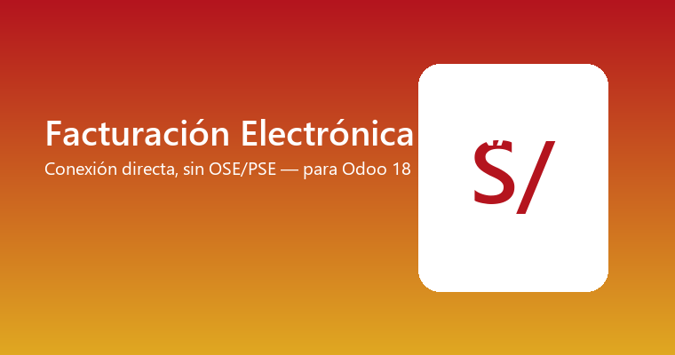

Firma digital del certificado .pfx/.p12, XML UBL 2.1 firmado (XMLDSig, RSA-SHA256, C14N), envío por SOAP a billService, CDR de aceptación/rechazo, código QR y RIDE en PDF, y Guías de Remisión Electrónica (GRE) vía la API REST/OAuth2 de SUNAT.
El flujo de Factura/Boleta/Notas fue probado en vivo contra el ambiente Beta real de SUNAT. El flujo de Guías de Remisión está construido según la documentación pública pero no pudo probarse en vivo por falta de credenciales — confirmá la URL exacta con el Manual del Programador vigente antes de usarlo en Producción.